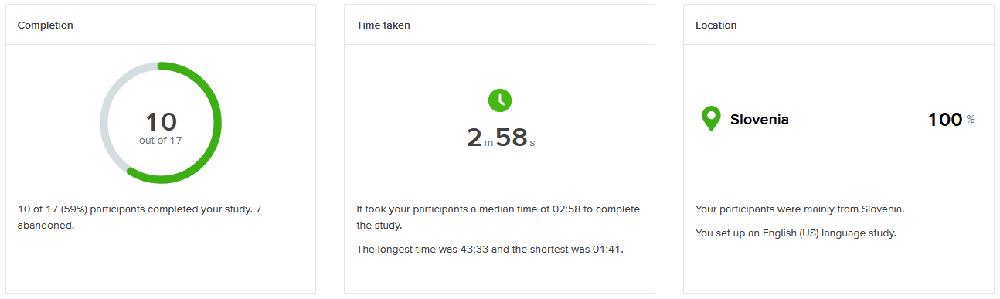
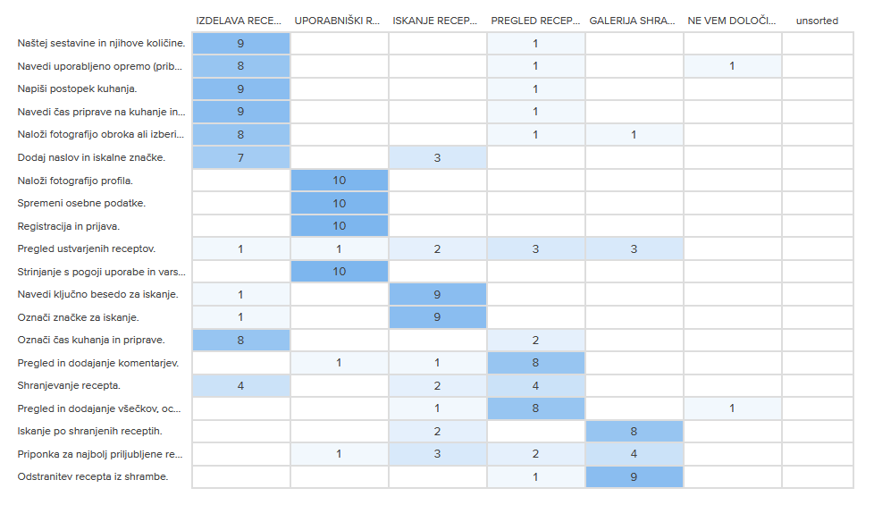
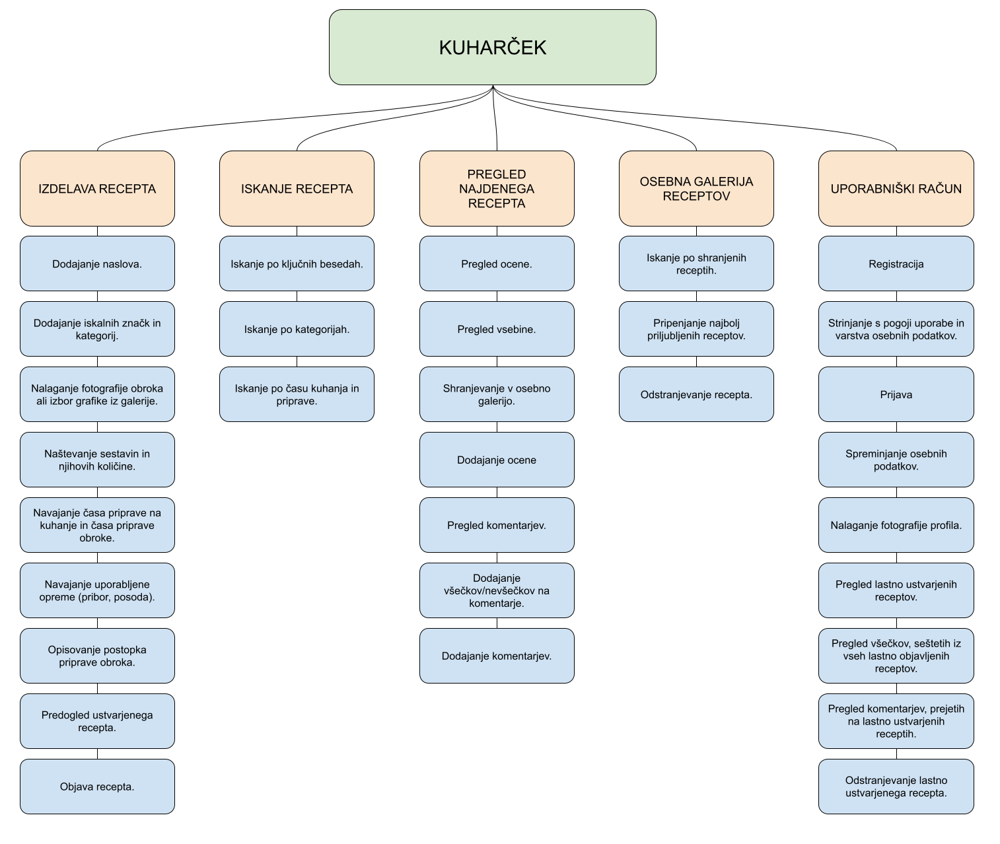

V tej nalogi se seznanimo s konceptom sortiranja kartic. Naša naloga je zavzemala izdelavo kratkega card sortinga, s katerim bi pridobili mentalni vidik
uporabnikov, kje bi oni določene funkcije in podatke našli v hierarhiji našega projekta.
Projekt card sortinga smo izvedli s pomočjo spletne platforme OPTIMAL WORKSHOP. Ta nam je omogočila hitro izdelavo card sortinga,
katerega smo nato delili z našimi potencialnimi uporabniki. V zastonjskem planu nam je bila omogočeno določiti le 20 kartic, vendar menimo, da je to za okvir našega projekta trenutno dovolj.
Odločili smo se za uporabo zaprtega tipa sortiranja, kjer so uporabniki vstavljali kartice v ustrezne kategorije brez možnosti določitve lastnih kategorij.
| Naštej sestavine in njihove količine. | Navedi uporabljeno opremo (pribor, posoda). | Napiši postopek kuhanja. | Navedi čas priprave na kuhanje in čas priprave obroka. | Naloži fotografijo obroka ali izberi grafiko iz knjižnice. |
| Dodaj naslov in iskalne značke. | Naloži fotografijo profila. | Spremeni osebne podatke. | Registracija in prijava. | Pregled ustvarjenih receptov. |
| Strinjanje s pogoji uporabe in varstvom osebnih podatkov. | Navedi ključno besedo za iskanje. | Označi značke za iskanje. | Označi čas kuhanja in priprave. | Pregled in dodajanje komentarjev. |
| Shranjevanje recepta. | Pregled in dodajanje všečkov, ocene. | Iskanje po shranjenih receptih. | Priponka za najbolj priljubljene recepte. | Odstranitev recepta iz shrambe. |
Seznam kartic, ki so bile ponujene udeležencem.

Kot lahko vidimo na zgornji grafiki, je od 17 udeležencev card sorting dokončalo le 10 udeležencev. Okvirna časovna zahtevnost je bila podana med 5 in 10 minutami, vendar so v povprečju nalogo rešili mnogo hitreje. Vsi udeleženci pa prihajajo iz Slovenije.

Sodeč po tabeli na zgornji sliki smo pridobili podatke, da so udeleženci dokaj enotno sortirali kartice v kategorije. Večina je tudi sledila našim pričakovanjem za razporeditevc. Veliko odstopanje se je pokazalo pri pregledu ustvarjenih receptov, shranjevanju recepta in priponki za najbolj priljubljene recepte. To nam kaže da imajo udeleženci dokaj drugačna pričakovanja od tega, kamor sodi izbrana funkcionalnost ali pa smo površno ubesedili kartico in tako je njen pomen bil zmedujoč za udeležence, kar se pokaže tudi v zelo ne-enotnem kategoriziranju navedenih kartic.
Sortiranje kartic nam je tako pokazalo, kakšno je razmišlanje udeležencev in s katero kategorijo povezujejo dane kartice, ki so jim bile ponujene. Hkrati nam je dalo vedeti, da moramo biti pazljivi pri umeščanje določenih funkcionalnosti, saj se uporabniki niso zmogli enotno odločiti, v katero kategorijo funkcionalnosti bi spadale.

Po pridobljenih podatkih smo nato po mentaliti udeležencev tabelarično uredili in prilagodili funkcionalnosti pri določeni kategoriji sistema. Ta tabela nam bo v pomoč, ko bomo morali ustvariti storyboard za nadaljnji razvoj aplikacije Kuharček.